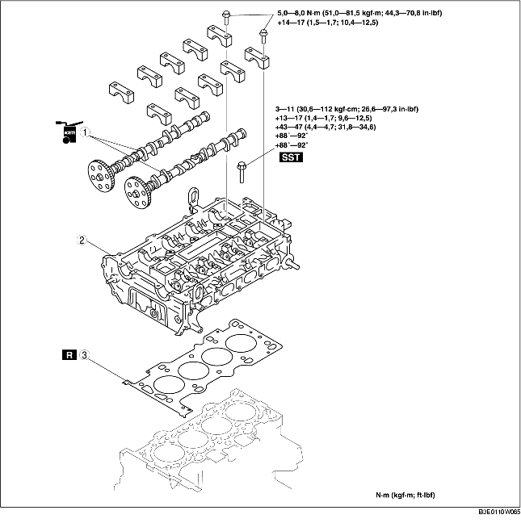

1. Quitar la cadena de la distribución. [Véase REMOCION/INSTALACION CADENA DE LA DISTRIBUCION (LF)].
2. Quitar las bobinas de encendido. [Véase REMOCION/INSTALACION BOBINA DE ENCENDIDO (LF)].
3. Quitar el colector de admisión. [Véase REMOCION/INSTALACION SISTEMA DE ADMISION (LF)].
4. Desconectar los siguientes componentes:
5. Para sustener sólidamente el motor, fijar el gato y el enganche para el motor al cárter del aceite.
6. Quitar según el orden indicado en la tabla.
7. Instalar en el orden contrario al de la remoción.
8. Controlar la compresión. [Véase CONTROL DE LA COMPRESION (LF)].

.
|
1
|
Eje de excéntricas
|
|
2
|
Culata
(Véase Detalles de remoción culata).
(Véase Detalles de instalación culata).
|
|
3
|
Junta de la culata
|
1. Aflojar los pernos de las tapas del eje de excéntricas en 2-3 pasos según el orden que se muestra en la figura.
1. Aflojar los pernos de la culata en 2-3 pasos según el orden que se muestra en la figura.
1. Medir la longitud de cada perno fileteado de la culata.
2. Apretar los pernos fileteados de la culata en 5 pasos según el orden indicado en la figura utilizando la SST (49 D032 316).
1. Poner la posición de excéntricas del cilindro N. 1 en el punto muerto superior (PMS) e instalar el eje de excéntricas.
2. Apretar temporalmente las tapas de los cojinetes del eje de excéntricas en 2-3 pasos, de forma regular.
3. Apretar los pernos fileteados de las tapas del eje de excéntricas según el orden indicado utilizando los dos pasos siguientes.